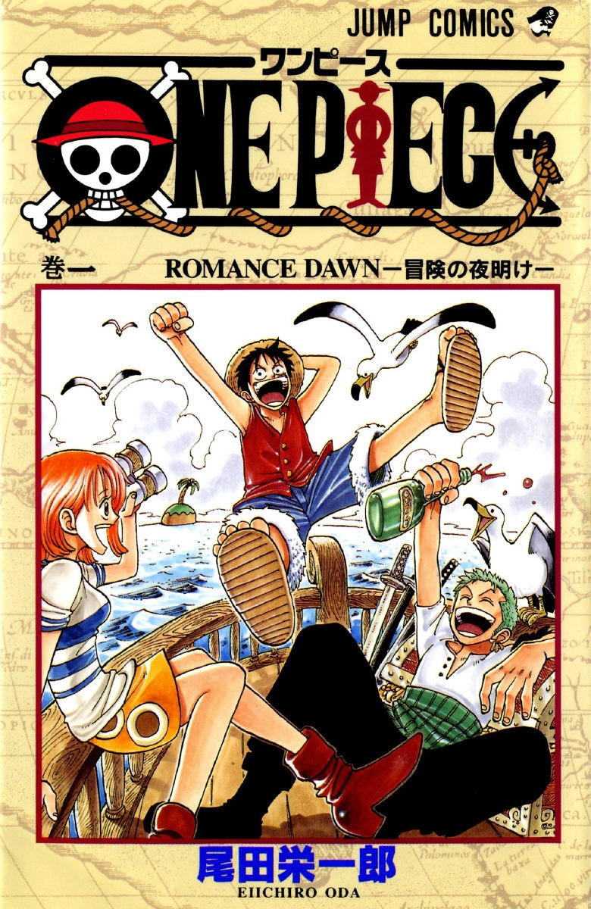

|  | 概述 | ||
|
作品 简介 |
《航海王》是日本漫画家尾田荣一郎作画的少年漫画作品，于1997年07月22日在集英社《周刊少年Jump》开始连载。改编的电视动画《航海王》于1999年10月20日起在富士电视台首播。
2012年05月11日，《航海王》获得第41回日本漫画家协会赏 [1] 。本作被吉尼斯世界纪录官方认证为“世界上发行量最高的单一作者创作的系列漫画” 。2017年07月21日，日本纪念日协会通过认证，将每年的7月22日设立为“航海王之日”。 |
||
|
创作灵感 |
连载期间 |
|
|
创作海贼故事是尾田荣一郎长久以来的梦想，他小时候一直很好奇为什么没有什么漫画以海贼为主题，他顶多只知道有《北海小英雄》这部动画。他认为男孩长到某个年纪后应该就会想要出海寻宝才对。尾田从小就很想看海贼的漫画，那个时候他对自己说，如果要自己画的话，那就一定会画海贼的故事。不管作品卖不卖得掉，他都是作好了心理准备才会这么选择的，纯粹就是他自己想看而已。 尾田荣一郎在初一时，第一次画了海贼漫画，而尾田对孩子冒险所抱着的想象太丰富，就一本笔记本也画不完。他认识到用“一期完”的形式来画海贼漫画是不可能的，于是他决定要在《少年JUMP》上连载海贼漫画 。 1997年，尾田荣一郎创作了海贼漫画《Romance Dawn》，这部一话完结的短篇漫画正是《航海王》的创作原型，后来这个名字还被《航海王》第一话作为副标题使用。当然，虽然两部漫画的主人公都叫路飞，性格却判若两人，剧情也并不相同 。 |
尾田荣一郎小时候是看着鸟山明的《龙珠》长大的，那部作品对他影响巨大。当时尾田最大的心愿就是能在单行本中看到更多的集数。于是当他自己成为漫画家以后，坚持要让《航海王》的单行本分量更足。他小时候还有一个“打击”，他曾天真地以为《龙珠》是鸟山明一个人画的，但实际上漫画家都有助手协助。 尾田第一次得知这个真相的时候，感觉“受骗了”。这个“打击”让他刻骨铭心，所以他成为漫画家之后竭尽所能不让孩子们失望。《航海王》画面中所有动态的部分都是尾田亲笔画的，助手只做一些很简单的工作。这是极少见的。 虽然尾田把这个故事画了十多年了，但的确从一开始他就想好了结局，这个结局只有几个主要编辑知道，绝不能透露。不过，虽然结局是已知的，中间的过程却未知，会有些什么故事，尾田老师自己也不知道。 尾田的煽情功力基本是他自己的，编辑在这点上很少能帮到他。编辑的作用是当一个读者，如果编辑没有被感动，那么尾田就要重新编他的故事。 关于作息时间，尾田在一次采访中透露：“每天凌晨2点睡5点起，每天共睡3小时。画完原稿后正好有一天可以休息，就睡一整天。”尾田已经这样坚持了十几年 。 尾田荣一郎最初的设想是用5年时间来完成《航海王》：最初的1年募集伙伴、冒险3年左右、最终章1年。 |
|
|
|
|||
|
|
|||
| 彩蛋 | |||